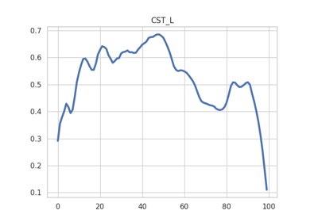

Examples# Introductory examples. RecoBundles80 using AFQ API RecoBundles80 using AFQ API Finding only the ARC, pARC, VOF Finding only the ARC, pARC, VOF AFQ API AFQ API Callosal bundles using AFQ API Callosal bundles using AFQ API How pyAFQ uses BIDS How pyAFQ uses BIDS Plotting the Optic Radiations Plotting the Optic Radiations Using cloudknot to run pyAFQ on AWS batch: Using cloudknot to run pyAFQ on AWS batch: Free water DTI Free water DTI AFQ with HCP data AFQ with HCP data Plotting tract profiles Plotting tract profiles  Plotting tract profiles using RecoBundles Plotting tract profiles using RecoBundles Visualizing AFQ derivatives Visualizing AFQ derivatives Plotting Novel Tract Profiles: Plotting Novel Tract Profiles: Gallery generated by Sphinx-Gallery